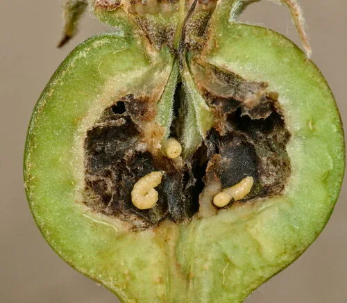

幼梨异常膨大后发黑
落花后个别幼梨异常膨大，可能藏有瘿蚊幼虫。剖开查看比只观察外形更容易辨认。

观察特征
比较同一果簇中刚坐住的幼梨。异常果可能先变圆膨大，看起来比邻果长得快，随后才发黑、开裂或脱落。
辨别线索
在浅色台面上切开可疑幼果。坏死中心聚有多条浅色幼虫时，较符合梨瘿蚊；仅花心冻黑而无幼虫，应考虑其他原因。
处理方法
在异常果开裂、幼虫离果前摘掉，并捡起新落的碎果。受害幼梨无法恢复正常生长，应把精力放在保住其余果实上。
后续复查
标记受害树，明年花谢后马上检查。比较时应选择花期相近的树，避免把早花、晚花品种之间的果径差误认成虫害。
抓住剖果时机
选一枚已肿胀但还没开裂的幼梨。已经发黑落地的果实剖开可能只剩空腔，因为幼虫也许已经离开。剖之前将它和正常幼果并排拍照，保留早期大小差异。